Inicio
YSLS · Pensamiento Matemático
aprender también es una forma de mirar las estrellas

Menú principal
elige a dónde quieres ir
Temario
Introducción
Temas a desarrollar
Actividades de los alumnos
Manuales
Problemas o ejercicios
Examen en línea
Base de datos
Reportes
Contactos